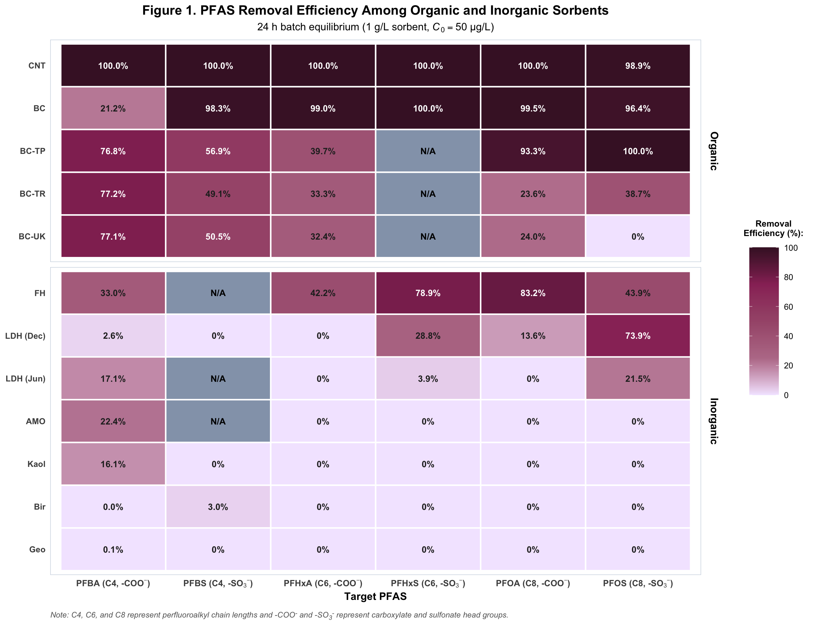
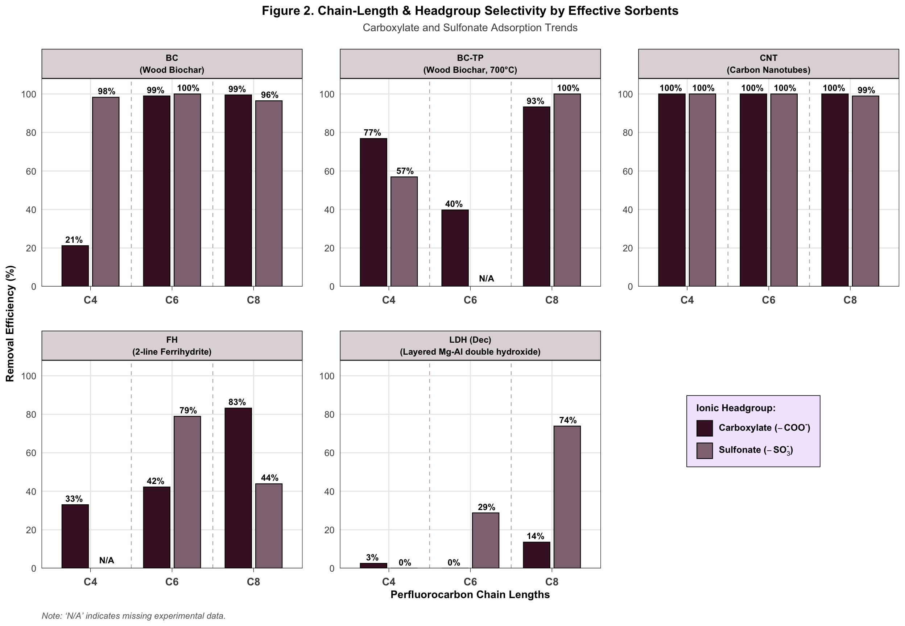
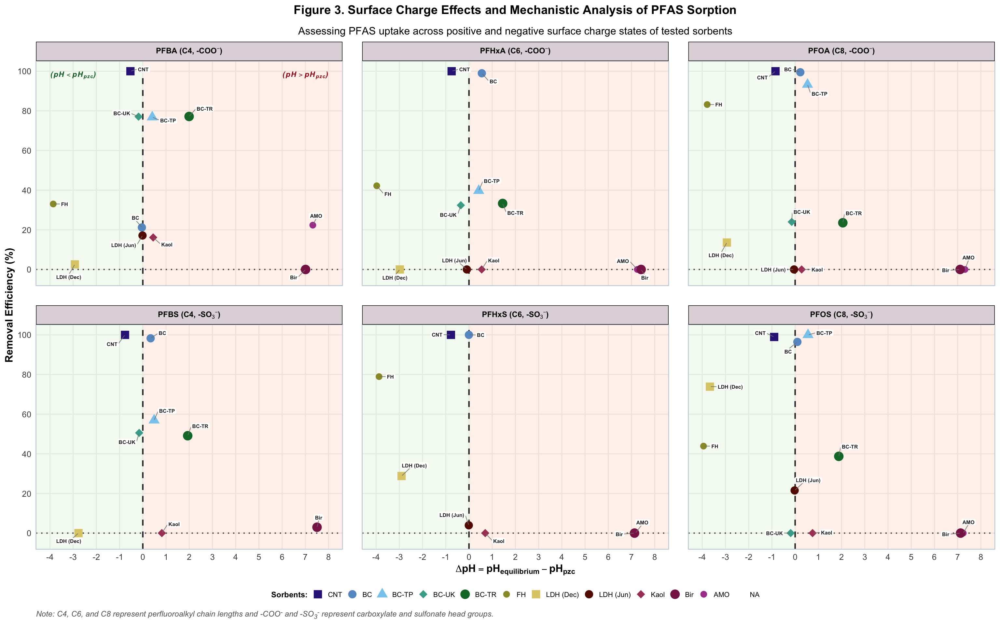
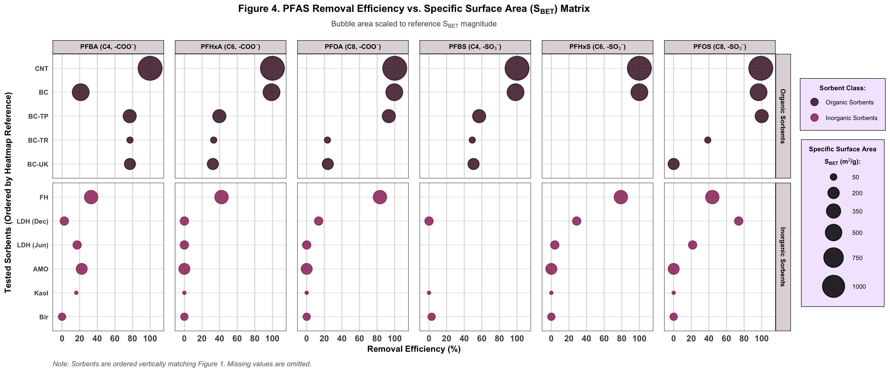

library(tidyverse)
library(readxl)
library(ggrepel)
library(ggtext)
library(ggh4x)
# Category Palette
pfas_purple_palette <- c(
"Sulfinate" = "#993266", # Vibrant Purple
"Carboxlylate" = "#BA7C97", # Soft Lavender
"Control / Blank" = "#94A3B8" # Neutral Slate
)
# Sequential Gradient
heatmap_purple_gradient <- c("#F3E8FF", "#BA7C97", "#A65879", "#993266", "#45172E")
# Theme Styling
theme_poster_purple <- theme_minimal(base_size = 12) +
theme(
strip.background = element_rect(fill = "#F3E8FF", color = NA),
strip.text = element_text(color = "black", face = "bold", size = 11, margin = margin(t = 6, b = 6)),
panel.grid.minor = element_blank(),
panel.border = element_rect(color = "#CBD5E1", fill = NA, linewidth = 0.5),
axis.title = element_text(face = "bold", color = "black"),
legend.title = element_text(face = "bold", size = 10),
plot.title = element_text(hjust = 0.5, face = "bold"),
plot.subtitle = element_text(hjust = 0.5)
)
# Prepping Data
file_path <- "Combined Data 12.10.2026.xlsx"
df_raw <- read_excel(file_path, sheet = "Concentrations")
# Sorbent PZC Lookup Table
pzc_lookup <- tibble(
Sorbent_Label = c(
"CNT", "BC", "BC-TP", "BC-UK", "BC-TR",
"FH", "LDH (Dec)", "LDH (Jun)", "Goe", "Kaol", "Bir", "AMO"
),
PZC = c(6.0, 8.5, 8.8, 9.9, 8.0, 8.0, 10.0, 10.0, 6.0, 5.0, 2.0, 2.0),
Legend_Key = factor(
c("CNT", "BC", "BC-TP", "BC-UK", "BC-TR", "FH", "LDH (Dec)", "LDH (Jun)", "Goe", "Kaol", "Bir", "AMO"),
levels = c("CNT", "BC", "BC-TP", "BC-UK", "BC-TR", "FH", "LDH (Dec)", "LDH (Jun)", "Goe", "Kaol", "Bir", "AMO")
)
)
# Clean & Compute Metrics
df_hc <- df_raw |>
mutate(
PFAS_clean = str_trim(as.character(PFAS)),
Date_str = as.character(as.Date(Date)),
raw_conc = as.character(`Concentration (ng/ml)`),
Conc_num = case_when(
raw_conc == "<LOD" ~ 0.0,
raw_conc %in% c("-", "", "N/A", "NA", "n/a") ~ NA_real_,
.default = suppressWarnings(as.numeric(raw_conc))
)
) |>
filter(
`Concentration Level` == "HC",
Filtered == TRUE,
PFAS_clean %in% c("PFBA", "PFBS", "PFHxA", "PFHxS", "PFOA", "PFOS")
) |>
filter(!is.na(Conc_num) | `Concentration (ng/ml)` == "<LOD")
mq_baseline <- df_hc |>
filter(Sorbent == "MQ", Date_str == "2025-12-15") |>
group_by(PFAS_clean) |>
summarise(C0 = mean(Conc_num, na.rm = TRUE), .groups = "drop")
facet_levels <- c(
"bold('PFBA (C4, -COO' * ''^-'' * ')')",
"bold('PFHxA (C6, -COO' * ''^-'' * ')')",
"bold('PFOA (C8, -COO' * ''^-'' * ')')",
"bold('PFBS (C4, -SO'[3] * ''^-'' * ')')",
"bold('PFHxS (C6, -SO'[3] * ''^-'' * ')')",
"bold('PFOS (C8, -SO'[3] * ''^-'' * ')')"
)
master_df <- df_hc |>
filter(Sorbent != "MQ", !is.na(pH)) |>
mutate(
Sorbent_Label = case_when(
!is.na(`BC Type`) ~ paste0("BC-", str_trim(`BC Type`)),
Sorbent == "LDH" & Date_str == "2025-12-15" ~ "LDH (Dec)",
Sorbent == "LDH" & Date_str == "2026-06-24" ~ "LDH (Jun)",
.default = str_trim(Sorbent)
)
) |>
left_join(mq_baseline, by = "PFAS_clean") |>
left_join(pzc_lookup, by = "Sorbent_Label") |>
mutate(
Removal = ((C0 - Conc_num) / C0) * 100,
Delta_pH = pH - PZC
) |>
group_by(PFAS_clean, Sorbent_Label, Legend_Key) |>
summarise(
Delta_pH_mean = mean(Delta_pH, na.rm = TRUE),
Rem_mean = mean(Removal, na.rm = TRUE),
.groups = "drop"
) |>
mutate(
Rem_clipped = pmin(pmax(Rem_mean, 0),100),
Facet_Expr = factor(
case_when(
PFAS_clean == "PFBA" ~ facet_levels[1],
PFAS_clean == "PFHxA" ~ facet_levels[2],
PFAS_clean == "PFOA" ~ facet_levels[3],
PFAS_clean == "PFBS" ~ facet_levels[4],
PFAS_clean == "PFHxS" ~ facet_levels[5],
PFAS_clean == "PFOS" ~ facet_levels[6]
),
levels = facet_levels
),
Point_Text = if_else(
Sorbent_Label %in% c("CNT", "BC", "BC-TP", "BC-UK", "BC-TR", "Goe", "Kaol", "FH", "LDH (Dec)", "LDH (Jun)", "Bir", "AMO"),
Sorbent_Label, NA_character_
)
)Mechanistic Influence of Organic and Inorganic Sorbents on the Immobilisation of Per- and Polyfluoroalkyl Substances (PFAS)
Figure 1. PFAS Removal Efficiency Among Organic and Inorganic Sorbents
# Define the PFAS labels
pfas_levels <- c("PFBA", "PFBS", "PFHxA", "PFHxS", "PFOA", "PFOS")
pfas_labels <- c(
expression('PFBA (C4, Carboxylate)'),
expression('PFBS (C4, Sulfonate)'),
expression('PFHxA (C6, Carboxylate)'),
expression('PFHxS (C6, Sulfonate)'),
expression('PFOA (C8, Carboxylate)'),
expression('PFOS (C8, Sulfonate)')
)
master_df_heat <- master_df |>
mutate(
Class = case_when(
str_detect(Sorbent_Label, "BC|CNT") ~ "Organic",
.default = "Inorganic"
),
PFAS_Labels = factor(PFAS_clean, levels = pfas_levels, labels = pfas_labels)
) |>
complete(Sorbent_Label, Facet_Expr) |>
group_by(Sorbent_Label) |>
fill(Class, Legend_Key, .direction = "downup") |>
ungroup() |>
group_by(Sorbent_Label, Class) |>
mutate(overall_rem = mean(Rem_clipped, na.rm = TRUE)) |>
ungroup() |>
mutate(Class = factor(Class, levels = c("Organic", "Inorganic"))) |>
arrange(Class, overall_rem) |>
mutate(
Sorbent_Label_2 = fct_inorder(Sorbent_Label),
Facet_Expr_Reordered = factor(
Facet_Expr,
levels = c(
"bold('PFBA (C4, -COO' * ''^-'' * ')')", # C4 Carboxylate
"bold('PFBS (C4, -SO'[3] * ''^-'' * ')')", # C4 Sulfonate
"bold('PFHxA (C6, -COO' * ''^-'' * ')')", # C6 Carboxylate
"bold('PFHxS (C6, -SO'[3] * ''^-'' * ')')", # C6 Sulfonate
"bold('PFOA (C8, -COO' * ''^-'' * ')')", # C8 Carboxylate
"bold('PFOS (C8, -SO'[3] * ''^-'' * ')')" # C8 Sulfonate
)
)
)
p1 <- ggplot(master_df_heat, aes(x = Facet_Expr_Reordered, y = Sorbent_Label_2, fill = Rem_clipped)) +
geom_tile(color = "white", linewidth = 0.8) +
geom_text(
aes(
label = ifelse(is.na(Rem_clipped), "N/A",
ifelse(Rem_clipped == 0, "0%", sprintf("%.1f%%", Rem_clipped))),
color = case_when(
is.na(Rem_clipped) ~ "black",
Rem_clipped > 50 ~ "white",
.default = "grey15"
)
),
size = 3.6, fontface = "bold", show.legend = FALSE
) +
scale_fill_gradientn(
colors = heatmap_purple_gradient,
na.value = "#94A3B8",
limits = c(0, 100),
breaks = seq(0, 100, by = 20),
name = "Removal\nEfficiency (%):",
guide = guide_colorbar(
title.position = "top",
title.hjust = 0.5,
title.theme = element_text(margin = margin(b = 12)),
barwidth = unit(12, "mm"),
barheight = unit(60, "mm")
)
) +
scale_color_identity() +
scale_x_discrete(labels = scales::parse_format()) +
facet_grid(Class ~ ., scales = "free_y", space = "free_y") +
labs(
title = "Figure 1. PFAS Removal Efficiency Among Organic and Inorganic Sorbents",
subtitle = bquote("24 h batch equilibrium (1 g/L sorbent," ~ italic(C)[0] == "50 µg/L)"),
x = "Target PFAS", y = NULL,
caption = "Note: C4, C6, and C8 represent perfluoroalkyl chain lengths and -COO<sup>-</sup> and -SO<sub>3</sub><sup>-</sup> represent carboxylate and sulfonate head groups."
) +
theme_poster_purple +
theme(
panel.grid = element_blank(),
strip.text.y = element_text(face = "bold", size = 12,
margin = margin(t = 8, b = 8, l = 10, r = 10)),
strip.background = element_rect(fill = "white", color = NA),
axis.text.y = element_text(face = "bold"),
axis.text.x = element_text(face = "bold", size = 10),
plot.title = element_text(face = "bold", size = 15),
plot.caption = element_markdown(hjust = 0, face = "italic", color = "grey40", size = 9, margin = margin(t = 10))
)
ggsave("Fig1.png", p1, width = 13, height = 10, dpi = 600)
p1
Figure 2. Chain-Length & Headgroup Selectivity by Effective Sorbents
df_chain <- master_df |>
filter(Sorbent_Label %in% c("CNT", "BC", "BC-TP", "FH", "LDH (Dec)")) |>
mutate(
Raw_PFAS = PFAS_clean,
Chain = case_when(
PFAS_clean %in% c("PFBA", "PFBS") ~ "C4",
PFAS_clean %in% c("PFHxA", "PFHxS") ~ "C6",
PFAS_clean %in% c("PFOA", "PFOS") ~ "C8"
),
Chain = factor(Chain, levels = c("C4", "C6", "C8")),
Headgroup = if_else(str_ends(Raw_PFAS, "S"), "Sulfonate", "Carboxylate"),
Sorbent_Full = case_when(
Sorbent_Label == "BC" ~ "BC\n(Wood Biochar)",
Sorbent_Label == "BC-TP" ~ "BC-TP\n(Wood Biochar, 700°C)",
Sorbent_Label == "CNT" ~ "CNT\n(Carbon Nanotubes)",
Sorbent_Label == "FH" ~ "FH\n(2-line Ferrihydrite)",
Sorbent_Label == "LDH (Dec)" ~ "LDH (Dec)\n(Layered Mg-Al double hydroxide)"
),
Sorbent_Full = factor(Sorbent_Full, levels = c(
"BC\n(Wood Biochar)",
"BC-TP\n(Wood Biochar, 700°C)",
"CNT\n(Carbon Nanotubes)",
"FH\n(2-line Ferrihydrite)",
"LDH (Dec)\n(Layered Mg-Al double hydroxide)"
))
) |>
complete(Sorbent_Full, Chain, Headgroup)
p2 <- ggplot(df_chain, aes(x = Chain, y = Rem_clipped, fill = Headgroup)) +
geom_vline(xintercept = c(1.5, 2.5), color = "#45172E66", linetype = "dashed", linewidth = 0.4) +
geom_bar(stat = "identity",
position = position_dodge(width = 0.75, preserve = "single"),
width = 0.65,
color = "black",
linewidth = 0.4,
na.rm = TRUE) +
geom_text(aes(label = ifelse(is.na(Rem_clipped), "N/A", sprintf("%.0f%%", Rem_clipped)),
y = ifelse(is.na(Rem_clipped), 1.0, Rem_clipped)
),
position = position_dodge(width = 0.8),
vjust = -0.5,
size = 3.2,
fontface = "bold"
) +
scale_y_continuous(limits = c(0, 100),
breaks = seq(0, 100, 20),
expand = expansion(mult = c(0, 0.08))
) +
coord_cartesian(ylim = c(0, 100)) +
scale_x_discrete(
labels = c(
"C4" = expression(bold("C4")),
"C6" = expression(bold("C6")),
"C8" = expression(bold("C8"))
),
expand = expansion(add = c(0.6, 0.6))
) +
scale_fill_manual(
values = c(
"Carboxylate" = "#45172e",
"Sulfonate" = "#8F7482"
),
labels = c(
"Carboxylate" = expression(bold("Carboxylate (") * bold(-COO^"-") * bold(")")),
"Sulfonate" = expression(bold("Sulfonate (") * bold(-SO[3]^"-") * bold(")"))
)
) +
ggh4x::facet_wrap2(~ Sorbent_Full, ncol = 3, axes = "all", remove_labels = "none") +
labs(
title = "Figure 2. Chain-Length & Headgroup Selectivity by Effective Sorbents",
subtitle = expression("Carboxylate and Sulfonate Adsorption Trends"),
x = expression(bold("Perfluorocarbon Chain Lengths")),
y = expression(bold("Removal Efficiency (%)")),
fill = expression(bold("Ionic Headgroup:")),
caption = "Note: 'N/A' indicates missing experimental data."
) +
theme_poster_purple +
theme(
plot.title = element_text(face = "bold", size = 13),
plot.subtitle = element_text(size = 11, color = "grey30", margin = margin(b = 14)),
panel.grid.minor = element_blank(),
panel.border = element_rect(color = "black", linewidth = 0.4, fill = NA),
legend.position = c(0.83, 0.28),
legend.background = element_rect(fill = "#F3E8FF", color = "black", linewidth = 0.3),
legend.margin = margin(8, 10, 8, 10),
legend.key.spacing.y = unit(6, "pt"),
axis.text.x = element_text(face = "bold", size = 11, margin = margin(t = 6)),
axis.title.y = element_text(face = "bold", size = 11),
axis.title.x = element_text(face = "bold", size = 11),
strip.background = element_rect(fill = "#45172E33", color = "black"),
strip.text = element_text(face = "bold", color = "black", size = 9, lineheight = 1.15, margin = margin(t = 5, b = 5)),
plot.caption = element_markdown(hjust = 0, face = "italic", color = "grey40", size = 9, margin = margin(t = 10)),
axis.line.x = element_line(color = "black", linewidth = 0.05),
axis.ticks.x = element_line(color = "black", linewidth = 0.2),
axis.ticks.length = unit(4, "pt"),
panel.spacing.x = unit(1.2, "lines"),
panel.spacing.y = unit(1.8, "lines")
)
ggsave("Fig2.png", p2, width = 13, height = 9, dpi = 600)
p2
Figure 3. Surface Charge Effects and Mechanistic Analysis of PFAS Sorption
fill_palette <- c(
"CNT" = "#332288", "BC" = "#6699CC", "BC-TP" = "#88CCEE",
"BC-UK" = "#44AA99", "BC-TR" = "#117733", "FH" = "#999933",
"LDH (Dec)" = "#DDCC77", "LDH (Jun)" = "#661100", "Goe" = "#CC6677",
"Kaol" = "#AA4466", "Bir" = "#882255", "AMO" = "#AA4499"
)
shape_palette <- c(
"CNT" = 15, "BC" = 16, "BC-TP" = 17, "BC-UK" = 18, "BC-TR" = 19, "FH" = 20,
"LDH (Dec)" = 15, "LDH (Jun)" = 16, "Goe" = 17, "Kaol" = 18, "Bir" = 19, "AMO" = 20
)
legend_labels_expr <- c(
"CNT" = "CNT",
"BC" = "BC",
"BC-TP" = "BC-TP",
"BC-UK" = "BC-UK",
"BC-TR" = "BC-TR",
"FH" = "FH",
"LDH (Dec)" = "LDH (Dec)",
"LDH (Jun)" = "LDH (Jun)",
"Goe" = "Goe",
"Kaol" = "Kaol",
"Bir" = "Bir",
"AMO" = "AMO"
)
legend_title_expr <- "Sorbents:"
zone_labels <- tibble(
Facet_Expr = factor(facet_levels[1], levels = facet_levels),
x = c(-3, 7),
y = c(98, 98),
label = c(
"bolditalic('('*pH < pH[pzc]*')')",
"bolditalic('('*pH > pH[pzc]*')')"
),
color = c("#006d2c", "#a50f15")
)
p3 <- ggplot(master_df, aes(x = Delta_pH_mean, y = Rem_clipped)) +
annotate("rect", xmin = -Inf, xmax = 0, ymin = -Inf, ymax = Inf, fill = "#e5f5e0", alpha = 0.40) +
annotate("rect", xmin = 0, xmax = Inf, ymin = -Inf, ymax = Inf, fill = "#fee0d2", alpha = 0.40) +
geom_vline(xintercept = 0, linetype = "dashed", color = "#333333", linewidth = 0.8) +
geom_hline(yintercept = 0, linetype = "dotted", color = "#555555", linewidth = 0.7) +
geom_point(aes(fill = Legend_Key, color = Legend_Key, shape = Legend_Key), size = 3.8, stroke = 1.0) +
geom_label_repel(
aes(label = Point_Text),
size = 2.1,
fontface = "bold",
color = "#222222",
fill = "white",
label.size = NA,
label.padding = unit(1.5, "pt"),
box.padding = 0.4,
point.padding = 0,
min.segment.length = 0,
max.overlaps = Inf,
force = 20,
force_pull = 0.2,
xlim = c(-4, 8),
direction = "both",
segment.color = 'grey50',
segment.size = 0.4,
segment.alpha = 0.8,
seed = 42,
) +
geom_text(
data = zone_labels,
aes(x = x, y = y, label = label),
color = zone_labels$color, size = 3.0, parse = TRUE, inherit.aes = FALSE
) +
facet_wrap(~Facet_Expr, ncol = 3, labeller = label_parsed) +
scale_fill_manual(values = fill_palette, labels = legend_labels_expr, name = legend_title_expr) +
scale_color_manual(values = fill_palette, labels = legend_labels_expr, name = legend_title_expr) +
scale_shape_manual(values = shape_palette, labels = legend_labels_expr, name = legend_title_expr) +
scale_x_continuous(limits = c(-4, 8), breaks = seq(-4, 8, by = 1)) +
scale_y_continuous(limits = c(-3, 100), breaks = seq(0, 100, by = 20)) +
coord_cartesian(clip = "off") +
labs(
title = "Figure 3. Surface Charge Effects and Mechanistic Analysis of PFAS Sorption",
subtitle = "Assessing PFAS uptake across positive and negative surface charge states of tested sorbents",
caption = "Note: C4, C6, and C8 represent perfluoroalkyl chain lengths and -COO<sup>-</sup> and -SO<sub>3</sub><sup>-</sup> represent carboxylate and sulfonate head groups.",
x = expression(bold(Delta * "pH" == "pH"[equilibrium] - "pH"[pzc])),
y = "Removal Efficiency (%)"
) +
guides(
fill = guide_legend(nrow = 1, byrow = TRUE, title.position = "left", title.vjust = 0.5),
color = guide_legend(nrow = 1, byrow = TRUE, title.position = "left", title.vjust = 0.5),
shape = guide_legend(nrow = 1, byrow = TRUE, title.position = "left", title.vjust = 0.5)
) +
theme_poster_purple +
theme(
plot.title = element_text(hjust = 0.5, size = 14, margin = margin(b = 12)),
plot.caption = element_markdown(hjust = 0, face = "italic", color = "grey40", size = 9, margin = margin(t = 10)),
legend.position = "bottom",
legend.box.background = element_rect(color = "white", linewidth = 0.5),
legend.text.align = 0,
legend.title = element_text(size = 9),
legend.text = element_text(size = 8),
legend.key.size = unit(0.4, "cm"),
legend.spacing.y = unit(0.1, "cm"),
legend.margin = margin(t = 2, r = 2, b = 2, l = 2),
panel.spacing = unit(0.8, "cm"),
strip.background = element_rect(fill = "#45172E33", color = "black"),
# --- Fine-tuned font size and line height for the two-line header boxes ---
strip.text = element_text(face = "bold", color = "black", size = 9)
)
ggsave("Fig3.png", p3, width = 16, height = 10, dpi = 600)
p3
Figure 4. PFAS Removal Efficiency vs. Specific Surface Area (SBET) Matrix”
sbet_lookup <- tibble(
Sorbent_Label = c("CNT", "BC", "BC-TP", "BC-UK", "BC-TR", "FH", "LDH (Dec)", "LDH (Jun)", "Goe", "Kaol", "Bir", "AMO"),
SBET = c(1200.0, 525.0, 286.0, 189.0, 44.0, 300.0, 90.0, 90.0, 45.0, 22.0, 65.0, 180.0)
)
df_matrix_final <- master_df |>
left_join(sbet_lookup, by = "Sorbent_Label") |>
mutate(
Class = factor(
case_when(
str_detect(Sorbent_Label, "BC|CNT") ~ "Organic Sorbents",
.default = "Inorganic Sorbents"
),
levels = c("Organic Sorbents", "Inorganic Sorbents")
),
Sorbent_Label = factor(
Sorbent_Label,
levels = c(
"BC-UK", "BC-TR", "BC-TP", "BC", "CNT",
"Goe", "Bir", "Kaol", "AMO", "LDH (Jun)", "LDH (Dec)", "FH"
)
)
) |>
group_by(Sorbent_Label, PFAS_clean, Facet_Expr, Class, SBET) |>
summarise(
Mean_Rem = mean(Rem_clipped, na.rm = TRUE),
SD_Rem = sd(Rem_clipped, na.rm = TRUE),
.groups = "drop"
) |>
filter(!is.na(SBET) & !is.na(Mean_Rem))
rect_df <- expand_grid(
Class = c("Organic Sorbents", "Inorganic Sorbents"),
Facet_Expr = unique(df_matrix_final$Facet_Expr)
)
p4 <- ggplot(df_matrix_final, aes(x = Mean_Rem, y = Sorbent_Label)) +
geom_errorbarh(aes(xmin = pmax(Mean_Rem - SD_Rem, 0),
xmax = pmin(Mean_Rem + SD_Rem, 100),
color = Class),
height = 0, alpha = 0.4, linewidth = 0.5) +
geom_point(aes(size = SBET, color = Class),
alpha = 0.85, stroke = 0.8) +
scale_color_manual(
values = c("Organic Sorbents" = "#45172E", "Inorganic Sorbents" = "#993266"),
name = "Sorbent Class:",
guide = guide_legend(override.aes = list(size = 4, linetype = 0))
) +
scale_size_continuous(
range = c(1.5, 14),
breaks = c(50, 200, 350, 500, 750, 1000),
name = expression(bold(atop("Specific Surface Area", paste(S[BET], " (m"^2*"/g):")))),
guide = guide_legend(direction = "vertical", title.position = "top", label.position = "right")
) +
scale_x_continuous(limits = c(-5, 110), breaks = seq(0, 100, by = 20)) +
facet_grid(Class ~ Facet_Expr, scales = "free_y",
space = "free_y", labeller = labeller(Facet_Expr = label_parsed)) +
labs(
title = expression(bold("Figure 4. PFAS Removal Efficiency vs. Specific Surface Area (" * S[BET] * ") Matrix")),
subtitle = expression("Bubble area scaled to reference " * S[BET] * " magnitude"),
x = "Removal Efficiency (%)",
y = expression(bold("Tested Sorbents (Ordered by Heatmap Reference)")) ,
caption = "Note: Sorbents are ordered vertically matching Figure 1. Missing values are omitted."
) +
theme_poster_purple +
theme(
plot.title = element_text(face = "bold", size = 13, hjust = 0.5),
plot.subtitle = element_text(size = 10, color = "grey30", hjust = 0.5, margin = margin(b = 14)),
panel.grid.minor = element_blank(),
panel.grid.major.x = element_line(color = "grey85", linewidth = 0.5, linetype = "solid"),
panel.grid.major.y = element_line(color = "grey90", linewidth = 0.4, linetype = "solid"),
panel.border = element_rect(color = "black", linewidth = 0.4, fill = NA),
panel.spacing.x = unit(0.5, "cm"),
panel.spacing.y = unit(0.2, "cm"),
strip.background = element_rect(fill = "#45172E33", color = "black"),
strip.text = element_text(face = "bold", color = "black", size = 8.5, margin = margin(t = 4, b = 4, l = 6, r = 6)),
legend.position = "right",
legend.box = "vertical",
legend.direction = "vertical",
legend.box.just = "center",
legend.background = element_rect(fill = "#F3E8FF", color = "black", linewidth = 0.3),
legend.margin = margin(8, 10, 8, 10),
legend.key.spacing.y = unit(3, "pt"),
legend.title = element_text(face = "bold", size = 8.5, hjust = 0.5),
legend.text = element_text(size = 8, hjust = 0),
axis.text.x = element_text(face = "bold", size = 11, margin = margin(t = 6)),
axis.text.y = element_text(face = "bold", size = 8.5),
axis.title.x = element_text(face = "bold", size = 11),
axis.title.y = element_text(face = "bold", size = 11),
plot.caption = element_markdown(hjust = 0, face = "italic",
color = "grey40", size = 9, margin = margin(t = 10))
)
ggsave("Fig4.png", p4, width = 16, height = 6.7, dpi = 600)
p4
| Type of PFAS | Chemical Formula | Physicochemical Features |
|---|---|---|
| Perfluoroalkyl Carboxylic Acids (PFCAs) | ||
| PFBA Perfluorobutyric Acid |
\(\text{C}_3\text{F}_7\text{COOH}\) (Short-Chain) |
Highly hydrophilic, with minimal affinity for carbon or mineral sorbents. |
| PFHxA Perfluorohexanoic Acid |
\(\text{C}_5\text{F}_{11}\text{COOH}\) (Medium Chain) |
Exhibits notable surface adsorption and wall retention. |
| PFOA Perfluorooctanoic Acid |
\(\text{C}_7\text{F}_{15}\text{COOH}\) (Long-Chain) |
Strong hydrophobic sorption on high surface area carbonaceous sorbents. |
| Perfluoroalkane Sulfonic Acids (PFSAs) | ||
| PFBS Perfluorobutanesulfonic Acid |
\(\text{C}_4\text{F}_9\text{SO}_3\text{H}\) (Short-Chain) |
Allows direct comparison of sulfonate vs. carboxylate electrostatic behaviour. |
| PFHxS Perfluorohexanesulfonate |
\(\text{C}_6\text{F}_{13}\text{SO}_3\text{H}\) (Medium-Chain) |
High electrostatic and hydrophobic retention relative to PFHxA. |
| PFOS Perfluorooctanesulfonate |
\(\text{C}_8\text{F}_{17}\text{SO}_3\text{H}\) (Long-Chain) |
Highest hydrophobicity and the highest removal efficiency across all effective sorbents. |
| Sorbent | \(S_{\text{BET}}\) (\(\text{m}^2/\text{g}\)) | \(\text{pH}_{\text{PZC}}\) | Mechanism & Efficiency |
|---|---|---|---|
| Organic Sorbents, Carbonaceous | |||
| CNT1 (Carbon Nanotubes) |
\(\ge 1200\) | \(5.5\text{--}6.5\) | Hydrophobic adsorption + micropore filling \(\rightarrow\) complete capture |
| BC2 (Wood Biochar) |
\(\approx 525\) | \(8.0\text{--}9.0\) | High surface area \(\rightarrow\) high overall capacity |
| BC-TP3 (Wood Biochar, 700 °C) |
\(286\) | \(8.5\text{--}9.2\) | Moderate microporosity \(\rightarrow\) selective long-chain PFSA uptake (100% PFOS) |
| BC-UK4 (Wheat Straw, 700 °C) |
\(189\) | \(9.5\text{--}10.3\) | Alkaline ash repulsion \(\rightarrow\) negligible removal |
| BC-TR (Sludgechar, 600–650 °C) |
\(44\) | \(7.5\text{--}8.5\) | Low porosity & reactivity \(\rightarrow\) negligible removal |
| Inorganic Sorbents, Mineral Phases | |||
| LDH5 (Layered Double Hydroxide) |
\(\approx 90\) | \(9.0\text{--}11.0\) | Anion exchange \(\rightarrow\) high retention at neutral pH, poor at alkaline |
| FH (2-line Ferrihydrite) |
\(\approx 300\) | \(7.8\text{--}8.2\) | Protonated surface (\(\text{pH} \approx 4.1\)) \(\rightarrow\) high long-chain PFSA uptake |
| AMO (Amorphous \(\text{MnO}_x\)) |
\(\approx 180\) | \(1.5\text{--}2.8\) | Permanent negative charge \(\rightarrow\) strong electrostatic repulsion |
| Bir (Birnessite, \(\text{KMnO}_4\text{--HCl}\)) |
\(\approx 65\) | \(1.8\text{--}2.5\) | Very low \(\text{pH}_{\text{PZC}}\) & negative charge \(\rightarrow\) strong electrostatic repulsion |
| Kaol (Kaolinite, KGa-2) |
\(\approx 22\) | \(4.5\text{--}5.5\) | Negative basal planes \(\rightarrow\) poor anionic PFAS affinity |
| Goe (Goethite) |
\(\approx 45\) | \(\approx 6.0\) | Hydrophilic surface \(\rightarrow\) negligible removal |
Note: \(S_{\text{BET}}\) = Brunauer–Emmett–Teller specific surface area; \(\text{pH}_{\text{PZC}}\) = point of zero charge.